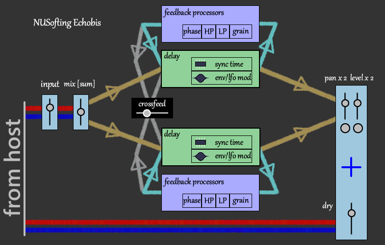
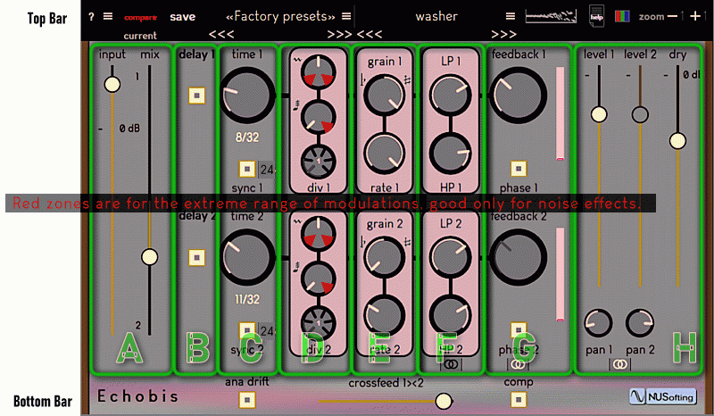
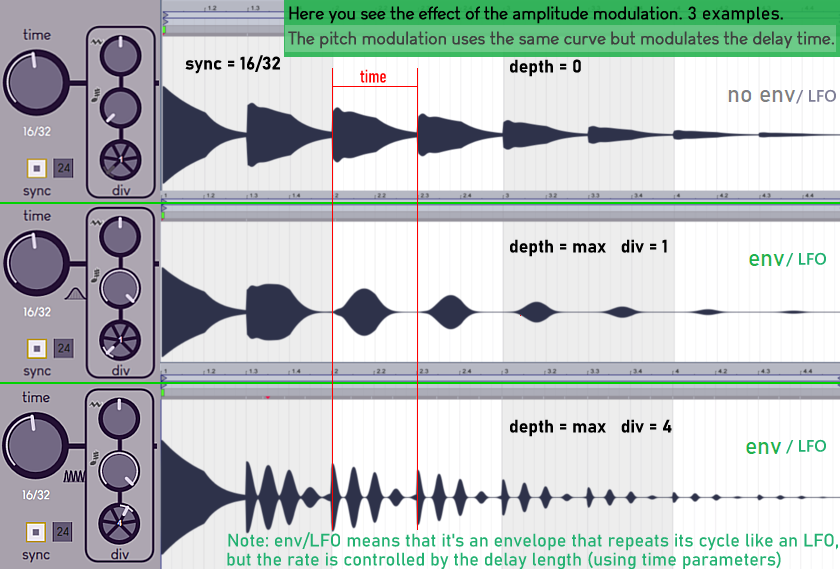
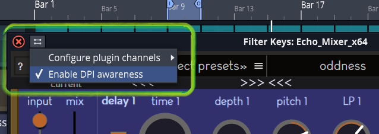

Echobis :: Polyrhythmic Creative Delay :: Audio Effect by NUSofting :: x64 AU and VST2 plugin
Echobis is the audio
delay effect that you can actually play. NUSofting Home
Page
"Make mesmerizing rhythmic
athmospheres.
Get fresh new
grooves on the fly from your drum loops and much more"
|
 |
||
|
 |
||
|
Top Bar |
here you find the controls to perform save/load of patches, the progressive randomizer, colour scheme selection, GUI resize and [?] is the options menu. |
menus and buttons |
|
A |
input level up to +6 dB, the mix balance sends mono signal to both delay lines. To achive a cleanset echo keep the input low and rise output levels, otherwise if you need saturated echo rise the input and keep the output levels low. |
2 sliders |
|
B |
2 switches turn on/off delay lines and clear feedback. |
2 switches |
|
C |
time knobs adjust delay
lengths in milliseconds or in multiples of 1/32 (or 1/24 for triplets)
when
sync
is on, turn on the 24 switch to use triplets
sync.
For instance: 4/32 gives 1/8, 6/32 gives 1/8 dotted and 2/24 gives 1/8
triplets = 12 notes in a 4/4 bar. [check also the help picture on
GUI: click the white arrow] When sync is off, you can enter the
milliseconds with keyboard by clicking on the display. Note that
for very small ms values the modulators (D) can destroy any sound. |
2 knobs 2 switches |
|
D |
modulators: pitch and amplitude
envelope/LFO controls:see the image below for an example of how
this modulator affects the echoes. |
3 knobs |
|
E |
granuliser: top knob adjusts the tune shift,
in the range of -12,+12 semitones, Warnings: Some rate values can produce glitches or ring modulation. Therefore first set the pitch using the top knob, then adjust rate to your taste |
2 knobs |
|
F |
filters: LowPass and HighPass filters for each delay line, the two lines can be linked. |
2 knobs 1 chainer |
|
G |
feedback gains and phase inverters, the two feedback gains can be linked. Note: phase changes are more audible when the crossfeed is used . |
2 knobs 2 switches 1 chainer |
|
H |
output level and stereo pan for each delay line, they can be linked, dry output level passes the input signal as it is. Note: this is the only paramter affecting the dry signal. |
3 sliders 2 knobs 1 chainer |
|
Bottom Bar |
|
2 switches 1 sliders |
|
 |
||
|
GUI notes: #1 : Using DPI awareness is mandatory in Waveform/Traktion DAW:  #2 : Very few DAWs, Cubase is one, will need you to close and reopen the plugin window after using "zoom"buttons to resize the GUI. |
||
|
2022 Copyrights - All Rights Reserved NUSofting - write to nusofting@nusofting.com |
||